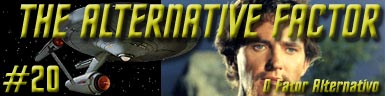

|
Srie
Clssica
Temporada 1

Anlise do episdio por
Carlos Santos


|
MANCHETE
DO EPISDIO |
Enquanto executa leituras em rbita de um planeta supostamente desabitado, a Enterprise afetada por um fenmeno desconhecido, que Spock descreve como uma piscadela no tecido da existncia. Em seguida a Frota Estelar emite um alerta geral e, quase ao mesmo tempo, Spock passa a receber leituras, de sinais de vida, vindas da superfcie antes deserta. Kirk forma um grupo de descida e vai ao planeta em busca da origem do sinal de vida encontrado por Spock.
Uma vez na superfcie eles encontram o que parece ser um tipo de veiculo de finalidade ignorada. Pouco depois um homem aparece, aparentemente em delrio, dizendo que precisava de ajuda, mas antes que pudesse dizer para que, cai do alto da elevao onde se encontrava.
De volta a nave, Kirk informado que: o fenmeno afetou tambm o funcionamento dos cristais de dilitio, necessrios para manter a nave em rbita. Spock no tem ainda nenhuma explicao sobre o a causa do fenmeno, apenas que o planeta o qual esto orbitando foi seu ponto de origem.
A Enterprise informada que o comando da Frota Estelar acredita que o fenmeno possa ser o prenuncio de uma invaso e ordena a Kirk que descubra sua causa uma vez que os maiores efeitos foram sentidos justamente na rea sob patrulha da Enterprise.
Kirk ordena a Spock que continue a investigao enquanto ele vai conversar com o homem trazido do planeta, que se diz chamar Lazarus e estar caando algum tipo de criatura aliengena perigosa que teria aniquilado sua civilizao e exige a ajuda de Kirk, que se nega e decide voltar ao planeta junto com Lazarus para investigar a sua histria.
Na superfcie do planeta, Kirk encontra Spock que est entre outras coisas examinando o veiculo de Lazarus, e que reafirma no haver mais ningum no local. Ocorre ento um novo fenmeno e Lazarus sai correndo e gritando do local, tendo Kirk em seu encalo. Com o fim do fenmeno, Kirk encontra Lazarus que diz mais uma vez ter sido atacado, e que aparenta estar fora de si.
Eles retornam a nave, levando Lazarus que se feriu na superfcie a enfermaria para tratamento, entre eles um ferimento na testa que McCoy cobre com uma atadura. Lazarus agora mais calmo volta a conversar com Kirk e pedir sua ajuda, que ainda permanece reticente. Ao examinar de novo a Lazarus, McCoy no encontra o ferimento na testa, o qual havia tratado e coberto. Ele diz a isto a Kirk, mas quando encontram Lazarus novamente o ferimento havia voltado a testa de Lazarus, deixando McCoy sem ao e Kirk ainda mais irritado com o que julgou ser algum tipo de piada de seu mdico.
Spock relata ter encontrado uma fonte de radiao no solo de origem no explicvel, uma espcie de dobra fsica ou fenda, que somente com o uso dos cristais de dilitio da nave foi possvel localizar. Lazarus pede os cristais a Kirk, pois diz que esta a chave para encontrar e destruir seu oponente, mas este mais ume vez nega a ajuda.
Aps deixar a ponte o fenmeno acontece novamente, afetando Lazarus de alguma forma. Este ruma ento para a engenharia onde ataca a tripulao. Aps este ataque, dois cristais desaparecem. Lazarus interrogado como suspeito do roubo, mas nega, acusando o seu inimigo de cometer o roubo. Kirk decide voltar de novo ao planeta levando Lazarus, por julgar haver alguma conexo do sbito aparecimento da fonte de radiao na superfcie do planeta e roubo dos cristais.
Um novo exame do veiculo de Lazarus no mostra sinais dos cristais desaparecidos, mas Kirk est convencido de que existe alguma pista no planeta e ordena uma nova busca. Uma nova manifestao do fenmeno ocorre, e logo aps Lazarus reaparece e salva Kirk de ser atingido por uma rocha que caiu de uma elevao, caindo desta logo em seguida.
De volta a enfermaria da Enterprise, Kirk diz que o planeta de onde Lazarus havia dito ter vindo jamais existiu, e exige a verdade de Lazarus.Este diz que seu planeta natal o mesmo em volta do qual a Enterprise est orbitando, e que foi destrudo h muito tempo. Diz ainda que sua nave uma cpsula temporal e que ele um viajante do tempo, procurando por seu inimigo atravs das eras. Lazarus tem um novo surto e desmaia sendo deixado na enfermaria.
De volta as suposies, Kirk e Spock comeam a especular sobre uma suposta existncia de um universo paralelo, de matria negativa, e da a existncia de dois Lazarus, um de cada universo que estariam transitando por uma porta entre os dois universos, que estaria relacionada fonte de energia do planeta. O inimigo na verdade uma espcie de anti-Lazarus, seu gmeo de tal universo.
A engenharia atacada por Lazarus, que se aproveita da confuso para roubar mais cristais e descer com estes ao planeta. Kirk o segue e usando o veiculo na superfcie chega ao universo paralelo onde encontra um Lazarus calmo e sereno. Este explica que a nica motivao do outro Lazarus destru-lo, pois ele enlouqueceu ao saber que tinha um duplo negativo. Esta obsesso se concretizada levar a destruio de ambos os universos.
O Lazarus negativo afirma que pretende impedir o que o Lazarus positivo cause tal destruio, prendendo-o em uma espcie de corredor entre os dois universos. Kirk retorna para o seu prprio universo e fora o Lazarus positivo para o corredor onde seu negativo o espera. Kirk e Spock retornam a Enterprise com os cristais roubados. Uma vez a bordo ele ordena a destruio do veiculo na superfcie enclausurando ambos os Lazarus no corredor, segundo Kirk por toda a eternidade, porm mantendo os dois universos a salvo.
O grande legado de The Alternative Factor inaugurar oficialmente a tecnobaboseira em Jornada nas Estrelas. impressionante como vrios dos termos utilizados aqui estariam doravante presentes, por diversas vezes, e repetidos a exausto nas outras edies da franquia. Coisas como matria e antimatria, universos paralelos, fendas subespaciais, viagens temporais, todas envoltas em explicaes longas, superficiais e inconsistentes.
Antes de entrarmos neste aspecto do episodio, uma observao torna-se necessria. Mais uma vez uma ao de origem desconhecida faz Kirk (e desta vez o comando da Frota Estelar) acreditar que a Federao pode sofrer uma invaso. Primeiro foi em Balance of Terror, depois em Arena e agora novamente vemos a Federao preocupada com possibilidade de sofrer algum tipo de ataque. Se em Balance Of Terror havia uma forte razo para justificar este tipo de parania, nos outros dois exemplos apenas um pouco de especulao serviu para colocar todo mundo em alerta fator um. Isto talvez reflita o clima existente na dcada de sessenta, com as lembranas da violenta tentativa de expanso da Alemanha nazista ainda recente, o recrudescimento da guerra fria e a escalada da violncia no Vietn.
Voltando ao episodio, o fenmeno inicialmente apresentado tripulao da Enterprise e que coloca toda Frota Estelar em alerta, seguida da descoberta de um ser extremamente perturbado, no caso Lazarus, imprime ao segmento uma sensao de mistrio e urgncia em sua soluo. Entretanto o que poderia render um bom episodio comea a se tornar cansativo, primeiro por que as constantes alternncias de humor de Lazarus (A e B) so confusas, nunca deixando claro qual deles esta na Enterprise e qual no est. Na verdade, a mudana de comportamento de ambos por demais superficial, e somente ao final que estas personalidades distintas so definidas. Isto no seria um problema, se na grande parte das suspeitas de Kirk e Spock no se baseassem justamente nestas mudanas de comportamento de seu convidado.
O episodio ento inundado de uma overdose de tecnobaboseira que vai enchendo os dilogos de Kirk e Spock de um jargo impenetrvel e montono para quem no tem MUITO interesse em Pseudocincia. Ele aposta tudo na idia que o todo o universo conhecido est beira da destruio, mas ser que est mesmo? Embora muitos dos princpios abordados em The Alternative Factor sejam objetos de estudo de gente sria, necessrio bom senso e conhecimento de causa parta colocar as coisas em termos que o espectador possa entender e se divertir entre um saco de pipoca e outro. A possibilidade da existncia de uma outra dimenso vem sendo admitida pelos tericos da Fsica Quntica, mas no se acredita que haja comunicao possvel entre estes universos, e mais, quem foi que disse que se existir, este seria um universo negativo? No h base cientifica para isto.
E mesmo que assim o fosse, a noo de que seria necessrio o encontro de um Lazarus positivo e outro negativo para criar o aniquilamento de matria uma fabula, visto que o conceito de matria e antimatria definido ao nvel das partculas elementares, ao nvel dos prtons e antiprotons, eltrons e positrons, e etc., porm fossem realmente os dois universos integralmente de matria e antimatria bastaria a simples troca de qualquer um elemento entre estes dois universos para causar a aniquilao da qual falam Kirk e Spock, e embora a energia liberada desta aniquilao seja de incrvel poder (a base do funcionamento do motor de dobra da Enterprise) isto resultaria de forma alguma na destruio de todo o universo conhecido.
Outros conceitos apresentados durante o episodio so passveis de algum tipo de reflexo sobre a forma e correo (ou no) de como foram usados, mas isto tornaria este artigo to cansativo quanto o prprio segmente que ele pretende analisar. Alm disto questo aqui no a correo ou no dos termos cunhados do jargo cientifico, pois o estranho seria se eles no aparecessem em uma serie de Fico Cientifica, e mais ainda, se o que faz que a fico seja cientifica justamente a condio dela estar intimamente ligada aos fatos cientficos, mesmo tericos. fato tambm que estes nem sempre iro se confirmar da forma como se teoriza, portanto seria injusto cobra aulas (de verdade) de Fsica Quntica numa srie de TV.
A coisa vira problema quando toda a trama depende desesperadamente de malabarismos tcnicos que so usados em excesso sem nenhum bom senso para carregar um roteiro ineficiente. Tire todas as citaes a nave do tempo, a fendas no espao tempo, a antimateria etc, etc, etc, e o que sobra? Um passageiro paranico que apesar de Spock ter informado antes mesmo dos crditos de abertura que este representava grande perigo para a nave passou a maior parte do tempo andando livremente pela Enterprise a ponto de conseguir por duas vezes (no importa se haviam dois deles) invadir a engenharia e roubar os cristais de dilitio da nave. Com base em que Spock concluiu que um ser que ele ainda nem conhecia era assim to perigoso algo que no se explica. Intuio? E depois de to bombstica declarao este ser passou todo o tempo a bordo e na superfcie andando sozinho e despreocupado.
As seguidas quedas de Lazarus devem ter sido inspiradas nas famosas quedas do Coiote em sua tentativa de capturar o papa-lguas e o tratamento dbio dado a este personagem, com objetivo de deixar a platia no escuro sobre a existncia dos dois seres, embora funcione neste aspecto, compromete a concluso final baseada entre varias coisas (todas elas especulaes) no fato de que o perfil psicolgico dos dois seres antagnico. Na verdade por quase todo o episodio quase no se nota tal diferena de comportamento, a no ser pelo efeito que parece sugerir algum tipo de transporte das duas entidades de um universo para o outro. Isto no acontece por culpa do ator Robert Brown, que esteve sempre altura do se esperou dele quando a situao de momento assim o permitiu, mas da conduo da trama.
Segundo a explicao dada no episodio teriam sido as pessoas do universo negativo que teriam encontrado a maneira para viajar entre as duas dimenses, o que torna incompreensvel o fato de ambos os Lazarus terem naves idnticas. Mais ainda, se os tais veculos eram responsveis por abrir o tal corredor entre os dois universos, o tal fator alternativo, no seria mais simples destruir as naves, ou mesmo uma delas e deixar cada um de seu lado e o universo a salvo? A cena de Kirk empurrando Lazarus para a nave no poupa nem mesmo co clich da luta corpo a corpo de Kirk, que inexplicavelmente pede a aos seguranas que observavam Lazarus para no se aproximarem enquanto o capito quase tem suas costelas fraturadas, tudo isto quando um faser em tonteio resolveria o problema de forma mais simples.
Por no seguir uma linguagem simples e por depender extremamente da incluso de termos tcnicos onde eles se apliquem ou no, The Alternative Factor no consegue criar empatia com o publico, por isto no emplaca. Apesar de tudo duas coisas devem ser louvadas, a primeira a apario da atriz Janet MacLachien como tenente Charlene Master, uma oficial mulher e negra a bordo da Enterprise responsvel pela engenharia, ou seja, fazendo algo realmente importante a bordo da nave (apesar disto nos fazer pensar: onde foi parar Scott? e onde foi para o cenrio regular da engenharia?). Nada contra Nichelle Nichols, que fique bem claro. A outra que apesar de toda forma artificial de como foi concebido a seqncia final dos Lazarus condenados a lutar eternamente presos em lugar nenhum, efeito amplificado pelo dialogo de Kirk e Spock nos deixa no mnimo, pensativos, mas de bom s.
Kirk - "I want facts, not poetry."
Spock - "I fail to comprehend your indignation, sir. I've simply made the logical deduction that you are a liar."
Lazarus - "That's hard to explain, Captain. I call it an alternative warp."
Kirk - "Sometimes pain can drive a man harder than pleasure."
Spock - "Madness has no purpose. Or reason. But it may have a goal."
Spock - "Possible existence of a parallel universe has been scientifically conceded."
Kirk
- "But
you'll be trapped as well, forever, at each others' throat, forever
through time."
Lazarus
- "Is
it such a large price to pay for the safety of two universes."
 Na
verso original do roteiro, ocorria um bizarro tringulo
amoroso entre a tenente Masters e os dois Lazarus.
Na
verso original do roteiro, ocorria um bizarro tringulo
amoroso entre a tenente Masters e os dois Lazarus.
 Este
reconhecidamente o episdio pior editado de toda a Srie Clssica
e um dos que tiveram os maiores problemas em sua produo. O ator
John Drew Barrymore iria viver Lazarus, at existindo material
publicitrio da poca divulgando tal fato, mas ficou
impossibilitado na ltima hora.
Este
reconhecidamente o episdio pior editado de toda a Srie Clssica
e um dos que tiveram os maiores problemas em sua produo. O ator
John Drew Barrymore iria viver Lazarus, at existindo material
publicitrio da poca divulgando tal fato, mas ficou
impossibilitado na ltima hora.
 O
efeito de Lazarus entrando no corredor dimensional foi conseguido
por um formato rotatrio abstrato e duplamente exposto sobre uma
imagem celeste combinada com a imagem de dois dubls lutando ao
fundo. A sala em que se deu a luta (o corredor na vida real)
era pequena e tinha paredes laranjas e vermelhas e um cho coberto
de fumaa para esconder o colcho colocado como uma precauo de
segurana para os dois.
O
efeito de Lazarus entrando no corredor dimensional foi conseguido
por um formato rotatrio abstrato e duplamente exposto sobre uma
imagem celeste combinada com a imagem de dois dubls lutando ao
fundo. A sala em que se deu a luta (o corredor na vida real)
era pequena e tinha paredes laranjas e vermelhas e um cho coberto
de fumaa para esconder o colcho colocado como uma precauo de
segurana para os dois.
Escrito por Don
Ingalls
Direo de Gerd
Oswald
Exibido em 30/03/1967
Produo: 20
Elenco:
William Shatner
como James Tiberius Kirk
Leonard Nimoy como Spock
DeForest Kelley como Leonard H. McCoy
Nichelle Nichols como Uhura
George Takei como Hikaru Sulu
Elenco convidado:
Robert
Brown como Lazarus A e B
Janet MacLachien como tenente Charlene Masters
Richard
Derr como Comodoro Barstow